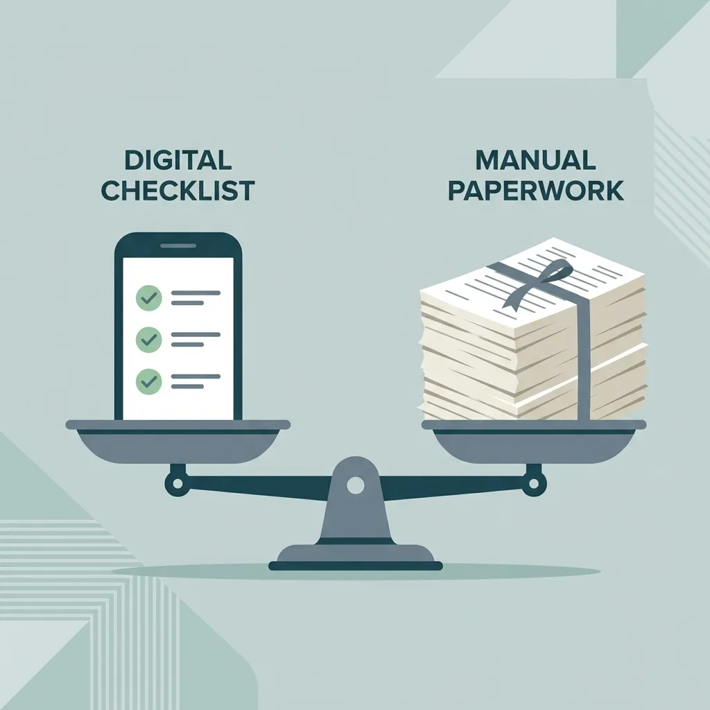

Safety Form Usability: The Friction Budget Method
Jun 18, 2026

Every required field you force workers to fill out beyond what they can complete honestly ruins your safety data.
Environment, Health, and Safety (EHS) software is typically bought by executives who focus on audits, but it is used by workers who focus on doing the job and getting home safely. When software requirements are written to satisfy audit checklists instead of site conditions, you get forms with thirty fields where five would do. Managers assume that making a field required forces the crew to collect that data.
In the field, the opposite happens. A worker outside in the rain, under pressure to produce, will not spend fifteen minutes fighting a mobile screen. They will type random characters to get past required fields and finish their shift. This creates a digital error trap: the system records perfect compliance, but your safety database is filled with junk.
In a shopping app, a long form makes a customer walk away, costing a sale. In a safety app, a long form makes a worker walk away, costing you a near-miss report.
To stop that from happening, safety apps must be built around a Friction Budget — a score that measures how much physical and mental effort a form demands from a worker.
The Real Effort of Field Input
Tapping a screen or typing text takes physical and mental effort. In a clean office, that effort is nearly invisible. On a plant floor or construction site, workers fight screen glare, poor signal, and safety gloves that make touchscreens unresponsive. In practice, when a form takes more than 60 seconds to complete, workers stop reading the questions. The form shows full completion. The data shows nothing.
To measure this effort, we assign Friction Points to common inputs on a phone:
- Simple Tap (Yes/No button or checkbox): 1 Point
- Sensor Scan (Scanning a badge or QR code): 1 Point
- Dropdown Menu (Searching and selecting): 3 Points
- Taking a Photo: 4 Points
- Short Typing (e.g., typing an Asset ID): 5 Points
- Long Typing (e.g., describing an issue): 10 Points
- Auto-fill (GPS location or device time): 0 Points
Any safety check filled out in the field — like a Pre-Task Hazard Assessment, a daily equipment inspection, or a permit walkdown — must stay under an initial budget of 15 Friction Points.
At 15 points, active input takes about 60 seconds. Below this limit, required fields do their job: they prevent workers from skipping steps and create a reliable record. Above 15 points, you get the opposite.
Workers under pressure will bypass the blocks. Some will type random letters to clear required fields. Others will check "Safe" on every question without reading them. Some will just fix the problem on the spot and log nothing. All three actions result in the same useless record: a completed form showing zero hazards.
When a form reaches 40 points, doing the physical work and filling out the app become competing tasks. The app always loses. These point values are a starting model — calibrate them against your own field data and adjust the budget if your site conditions are harsher.
The 15-point budget is for routine inspections. For complex work permits with legally required fields, you cannot eliminate all friction. Your goal instead is to make the form as close to that legal baseline as possible.
Technology will change — voice entry and AI auto-fill will reduce these scores over time. But worker behavior will not: if a form takes more effort than the job itself warrants, workers will always find the quickest way to submit it.
Interactive Form Friction Calculator
Use the calculator below to check your safety forms. Select the fields required for frontline inspections to see if your crew is likely to skip or bypass them under field conditions.
Form Friction Calculator
Add the fields required on your mobile safety form to calculate its usability score.
Pass: Optimized
Friction is low. The form is suitable for frontline inspections, even in harsh site conditions.
A friction score above 15 is a documented usability flaw. Documenting this score — with specific field types, point values, and how it affects worker behavior — is what turns a vague safety complaint into a clear requirement for software vendors, or a key rule when buying your next platform.
The Dynamic Form Pattern
To keep frontline forms within the 15-point budget, hide extra questions until they are actually needed. The app starts with a short set of questions and reveals new sections only when a worker's answer requires them.
The 15-point limit applies to the first screen the worker sees when they open the form under pressure. If a worker selects a high-risk answer — like hot work — that opens new checklists, the extra effort is worth it because of the hazards of the task. The diagram below shows how this flow works for a hot work permit.
Case Study: Pre-Task Hazard Assessment
A pre-task hazard assessment — like a Job Safety Analysis (JSA) or task risk assessment — starts almost every high-risk job in construction, manufacturing, or plant operations. But it is also one of the forms workers bypass the most, checking every box from memory in a few seconds before the shift starts. Instead of loading 25 fields at once, an optimized app opens with just three questions:
- Task Type: (Dropdown Menu - 3 Points)
- Are hazardous energy sources present? (Yes/No button - 1 Point)
- Is hot work required? (Yes/No button - 1 Point)
Total Initial Friction: 5 Points.
If the worker selects "Yes" to hot work, the app opens the hot work checklist (adding 6 points). If they select "No," the form closes and they can submit it immediately. The form only grows when the danger of the job requires it.
Faster Ways to Fill Out Pre-Task Checks
Every pre-task hazard assessment asks the same basic questions: who, what, where, and when. You can collect all of this data without forcing a worker to type a single letter:
| Standard Field | Friction Points | Faster Option | Friction Points |
|---|---|---|---|
| Typing worker or crew ID | 5 Points | Scanning a badge | 1 Point |
| Selecting Date & Time | 3 Points | Auto-filling from the phone clock | 0 Points |
| Selecting work area or location | 3 Points | GPS location, confirmed with one tap | 1 Point |
| Typing equipment ID | 5 Points | Scanning an equipment barcode or tag | 1 Point |
| Typing a hazard description and logging it | 7 Points | Taking a photo | 4 Points |
These five fields — worker, time, location, equipment, and any hazard found — make up most of the friction in a safety check. Auto-filling them using the phone's sensors saves 13 friction points on setup before the worker even answers the first safety question, and another 3 points if a hazard needs to be logged. Most safety software can do this today. The problem is that managers configure the software using the same checklist logic that caused the usability problems in the first place.
Rules for Safety App Requirements
When writing requirements for safety apps, you should insist on three simple rules:
- Auto-Fill Everything Possible: Safety forms must never open with blank pages that require typing. The app should automatically fill in the worker's work area, department, and supervisor based on their login profile, along with the current time from the device.
- Check Fields Instantly: The app must verify required fields on the phone itself, without waiting for the server. The screen should never freeze with a loading spinner because of a weak signal.
- One-Tap Photo Reporting: Workers must be able to report a hazard by taking a photo directly from the app's home screen. The app should start the draft in the background and automatically attach the date, time, and GPS location.
Making an app easy to use is not about looks. It is the line that determines whether your database contains real safety data or fake compliance records.